Adesso
La dose del momento, in una sola schermata.
La schermata Adesso mostra cosa prendere ora, cosa è rimasto da segnare e cosa viene dopo. Un tocco su «Ho preso» ed è fatta. Testo grande e pulsanti grandi, senza registrazione.
Pensato per chi prende farmaci ogni giorno e per chi assiste qualcuno.
Adesso
La schermata Adesso mostra cosa prendere ora, cosa è rimasto da segnare e cosa viene dopo. Un tocco su «Ho preso» ed è fatta. Testo grande e pulsanti grandi, senza registrazione.
L’avviso
L’avviso arriva con i pulsanti «Ho preso» e «Rimanda di 10 min». Scegli come avvisare: discreto, insistente — si ripete finché non segni — o allarme.
Scorta
Conta quanto c’è nella confezione e Pilulário mostra quando finirà. «Ne ho comprato altro» aggiunge la confezione nuova a quella rimasta.
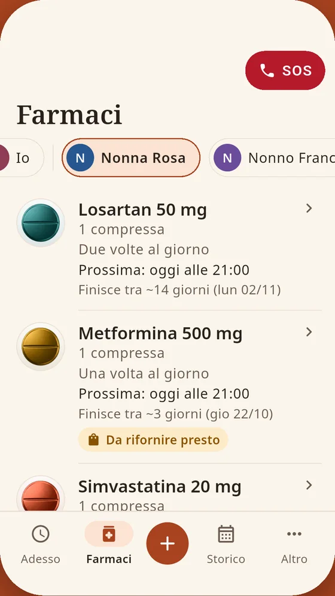
Storico
Il giorno, la settimana e il mese: cosa è stato preso, cosa è stato saltato e da chi. Hai sbagliato? Annulla.
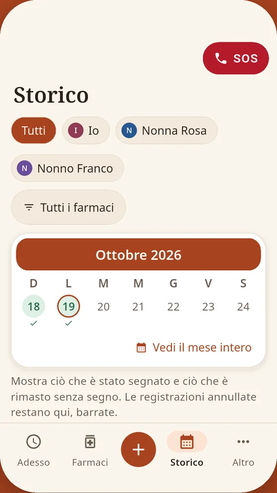
Per chi assiste
Ogni persona con il suo colore e la sua foto, i suoi farmaci e i suoi avvisi. Annotazioni, allergie e attenzioni restano sotto gli occhi di chi dà il farmaco.
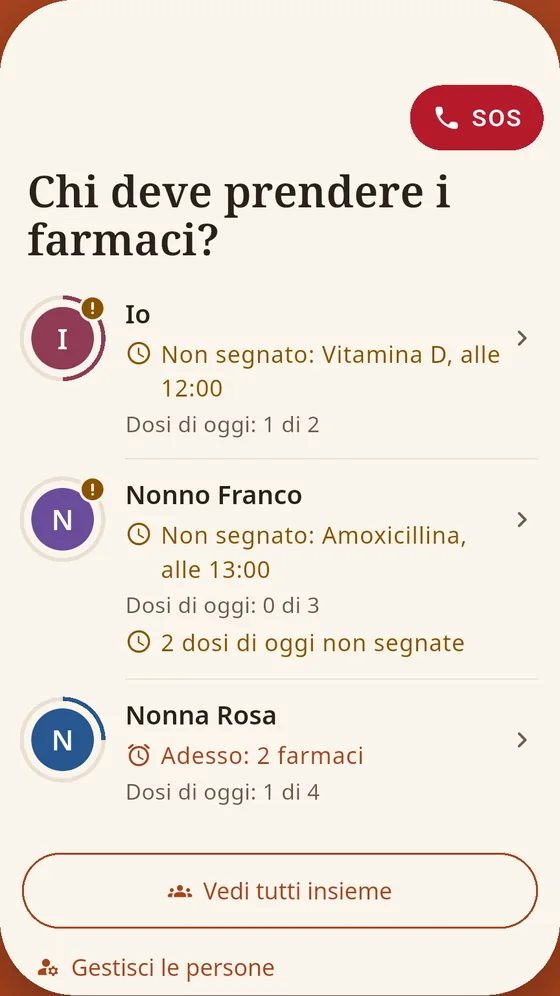
Passaggio di consegne
Lasci qualcuno ad assistere? Passa i farmaci con la fotocamera, senza internet, e ricevi il resoconto di ciò che è stato dato.
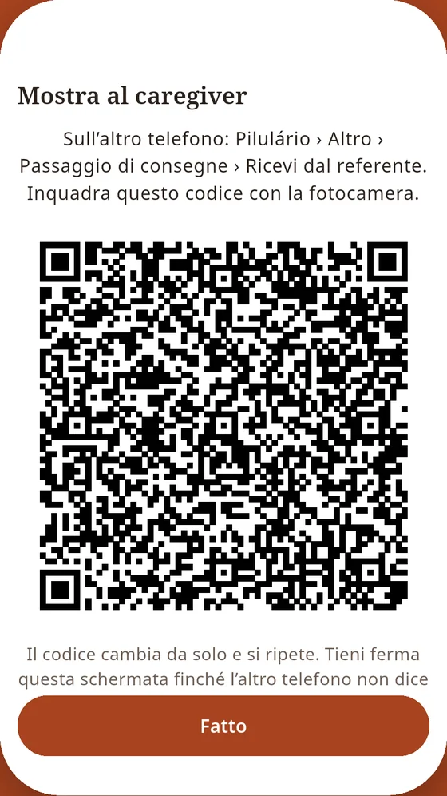
Stato dei promemoria
L’app controlla se il telefono lascia suonare gli avvisi e mostra cosa sistemare. E il pulsante SOS ha i numeri di emergenza e il telefono di chi assiste.
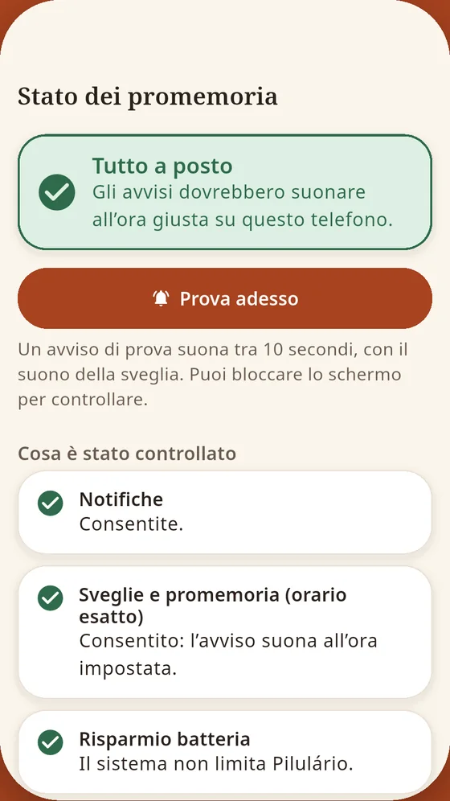
Avvisi, scorta, storico e SOS sono gratis, senza limite di farmaci. L’acquisto unico «Famiglia e caregiver» aggiunge ciò che semplifica la vita a chi assiste più persone.
Le schermate dell’app.
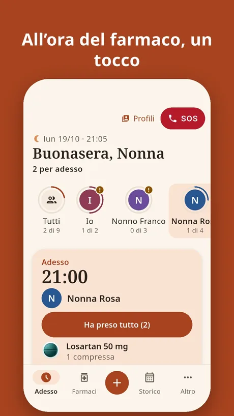
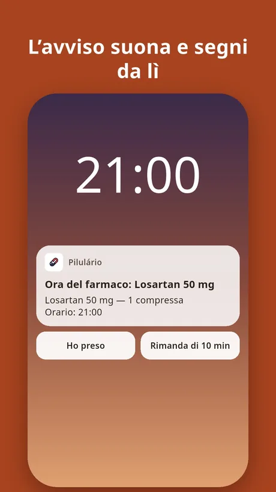
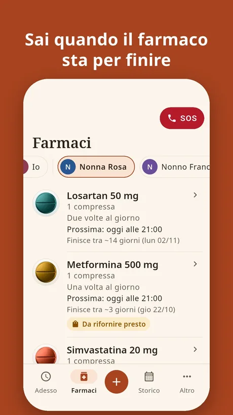
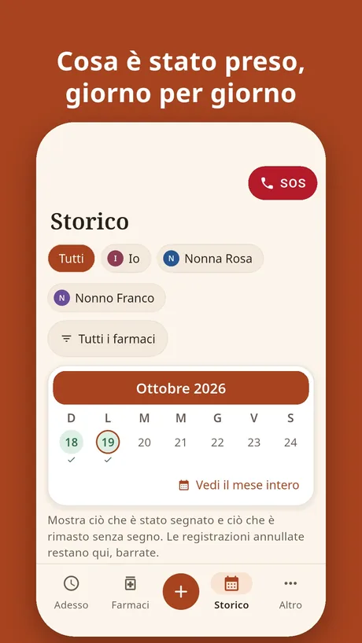
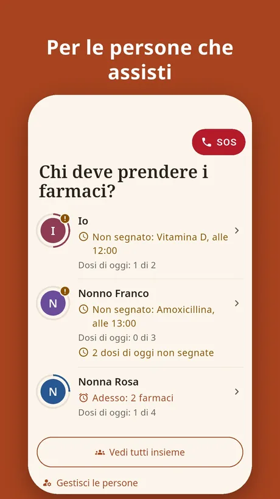
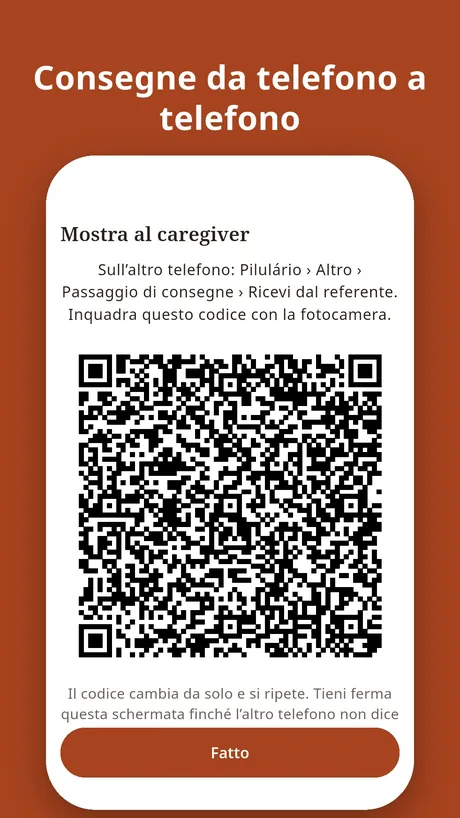
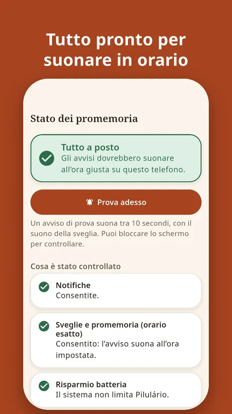
Nessun account, nessuna pubblicità e nessuna raccolta di dati. Pilulário non usa internet: ciò che scrivi resta sul tuo dispositivo ed esce solo quando condividi un riepilogo, esporti la copia di sicurezza o passi le consegne a un altro telefono.
Sì. La sveglia, la scorta, lo storico e il SOS sono gratis, senza limite di farmaci. L’acquisto unico «Famiglia e caregiver» aggiunge più persone, il passaggio di consegne, le annotazioni e la modalità Avanzata. Niente abbonamento e niente pubblicità.
Sì. L’app non usa internet: avvisi, dati e passaggio di consegne funzionano con il telefono offline. Solo l’acquisto passa dallo store.
No. Non c’è nessuna registrazione. Per portare i dati su un telefono nuovo, esporta la copia di sicurezza in un file.
Apri «Stato dei promemoria»: l’app controlla i permessi di notifica, di sveglia e della batteria e mostra cosa sistemare. Puoi provare un avviso subito.
No. Pilulário è un promemoria: non è un dispositivo medico, non suggerisce farmaci, dosi o orari e non sostituisce le indicazioni del tuo medico o farmacista.